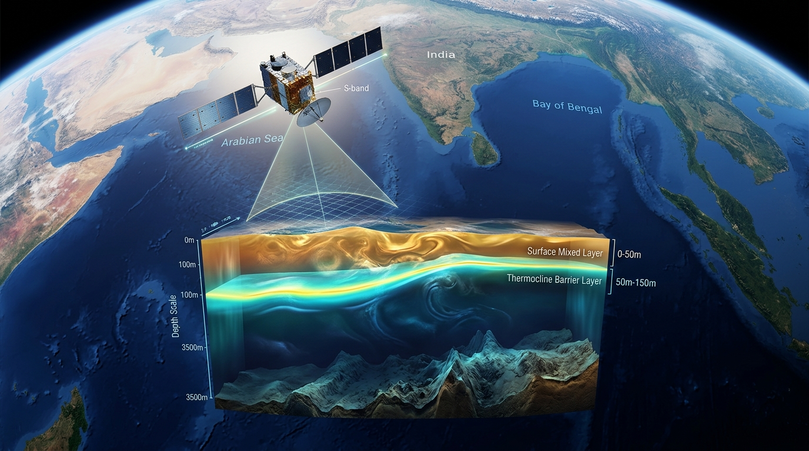

SEE BENEATH
THE OCEAN SURFACE
Predicting Subsurface Ocean Temperature from Satellite Observations across the North Indian Ocean, reconstructing 15 continuous vertical depth levels from 0 to 1000m.

Canonical marine grid (~24,000 active ocean cells across the North Indian Ocean)
Standard oceanographic depths preserving vertical inversions from 0m to 1000m
Surface mixed layer down to bathypelagic abyss with physics loss stability
RMSE: 0.669°C • Validated on 21.2M unseen independent points against ARGO
Surface Data → OceanEmbed-Net → Subsurface
SST • SSS • SLA • CURRENTS • WINDS projected through deep representation learning
Surface Observations
NOAA OISST v2.1 (SST), CMEMS Multi-Obs (SSS), CMEMS DUACS (SLA), Geostrophic Currents (u, v), and 10m Wind Stress vectors.
Canonical 0.25° Tensor
Multi-mission spatial alignment, land-sea masking, and day-of-year cyclic harmonics into standardized 11 × 64 × 64 tensors.
Neural Representation
Hierarchical CNN encoder with bottleneck spatial self-attention (64 tokens, 4 heads) capturing planetary Rossby waves.
15 Depth Levels
Skip-connected 3D decoder projecting continuous thermal structures from 0m to 1000m, validated against ARGO CTD floats.
Dedicated Scientific Modules
Ocean Explorer
Interactive subsurface temperature map across the North Indian Ocean with dynamic depth slicing, station telemetry, and vertical curves.
Model Validation
Evaluate model accuracy against independent in-situ ARGO profiling floats, 2D cross-sections, depth-wise error curves, and water mass matrices.
Model & Science
Inspect the end-to-end representation learning architecture, satellite input tensors, self-attention mechanisms, and 3D volumetric fields.
About & Specs
Operational domain specifications, ARGO sparsity analysis, downstream applications, and institutional research authority.
Ocean Explorer
OPERATIONAL WORKSTATIONInteractive 3D subsurface ocean temperature reconstruction across the North Indian Ocean (0 to 1000m).
Stationary Seasonal Temperature Cycle
Annual cycle at current station coordinates [14.00°N, 87.50°E].
VALIDATION
Comprehensive multi-depth verification on 21.2M independent test points (2008–2009)
2D Heatmap Slice (Vertical Transect)
Latitude Transect: 14.0°N (Arabian Sea to Bay of Bengal, 48°E – 98°E)(7°C) Warm
(30°C)
Temperature Profile
Depth (0 – 1000m)Operational Validation
Metrics
INCOISStandard
SKILL
Feature Explainability
Relative Contribution (%) of Satellite Inputs Across DepthsData Table (%)
Layer Weights| Depth (m) | SST (%) | SSS (%) | SLA (%) | Currents (%) | Winds (%) |
|---|
From Surface Observations to Subsurface Temperature
Convolutional representation learning with spatial multi-head self-attention and 3D depth projection.
OceanEmbed-Net Architecture Pipeline
Satellite Input Streams
SST, SSS, SLA, Surface Geostrophic Currents (u, v), 10m Wind Stress vectors, and day-of-year cyclic harmonics.
Hierarchical Conv Encoder
Multi-scale downsampling through GroupNorm and GELU non-linearities, extracting local thermodynamic and vortex features.
Bottleneck Spatial Self-Attention
64 spatial tokens with 4 attention heads capturing non-local teleconnections, cross-basin Rossby waves, and eddy tilting.
3D Depth Profile Decoder
Hierarchical spatial upsampling with skip connections projecting directly onto vertical temperature channels.
Continuous Thermal Field & In-Situ ARGO Validation
Supervised against GLORYS12V1 ocean physics reanalysis and verified against independent blind ARGO float profiles.
How OceanEmbed-Net Reconstructs 3D Ocean Intelligence
A lightweight, physics-consistent neural framework bridging 2D satellite surface swaths to 3D volumetric fieldsSatellite Data Ingestion
Collects daily multi-sensor observations: Sea Surface Temperature (SST), Altimetric Sea Level Anomaly (SLA), Sea Surface Salinity (SSS), and 10m Wind Stress vectors on a canonical 0.25° grid.
Deep Representation & Attention
Hierarchical convolutional encoders and bottleneck spatial self-attention learn non-linear vertical thermal stratification, baroclinic Rossby wave propagation, and mesoscale eddy heat advection.
3D Temperature Inversion
Decodes volumetric temperature across 15 standard oceanographic depths down to 1000m in under 45ms, delivering gap-free predictions for cyclone tracking and marine heatwave monitoring.
Surface Input to Subsurface Output Mapping
Direct comparison of surface satellite variables entering the neural network and the resulting 3D oceanographic predictionsAbout OceanEmbed
Operational domain specifications, dataset splits, technology infrastructure, and institutional research authority.
About the OceanEmbed Platform
OceanEmbed is an operational artificial intelligence platform developed under the Ministry of Earth Sciences (MoES) and the Indian National Centre for Ocean Information Services (INCOIS). It solves the core scientific challenge of spaceborne oceanography by reconstructing full 3D subsurface temperature fields (0 to 1000m) from multi-mission satellite surface observations in real time.
Harmonized Multi-Mission Satellite Constellation
Multi-sensor spaceborne remote sensing captures surface boundaries, which OceanEmbed harmonizes onto a canonical 0.25° spatial grid:
NOAA OISST v2.1
Daily infrared & microwave Sea Surface Temperature capturing the upper boundary condition.
CMEMS DUACS Altimetry
Radar altimetry Sea Level Anomaly measuring integrated water-column density & thermocline shift.
CMEMS Multi-Observation
Sea Surface Salinity tracking freshwater river plumes and barrier layer halocline dynamics.
ECMWF ERA5 & Scatterometry
10m surface wind stress vectors driving coastal Ekman suction, upwelling, and vortex mixing.
Global ARGO Float Array
Independent in-situ CTD profiling floats across the Indian Ocean used for ground truth testing.
Key Platform Deliverables & Innovations
Core technologies developed to meet the operational oceanographic mandate of INCOIS and MoES:
Continuous 3D Thermal Field
Reconstructs 15 standard ocean depths from 0m to 1000m across all 24,000 grid cells, eliminating the spatial sparsity of drifting floats.
Interactive 3D WebGL Workstation
Realistic Three.js volumetric continuum viewer allowing scientists to slice underwater temperature layers and inspect virtual thermal profiles.
Real-Time Operational Inference
Generates synoptic basin predictions in under 45ms, supporting real-time cyclone intensity forecasting and marine heatwave monitoring.
CF-1.8 NetCDF & CSV Export
One-click download of NetCDF-3 Classic (.nc) binary arrays with CF-1.8 metadata and station CSV vertical profiles with dT/dz gradients.
Interactive Longitudinal Transects
Cross-sectional vertical heatmap slicing across 48°E to 98°E, resolving thermocline depth variation from the Arabian Sea to the Bay of Bengal.
Ray-Casting Coastline Mask
Point-in-polygon land detection protecting oceanic data integrity by preventing false predictions over mainland India and adjacent coasts.